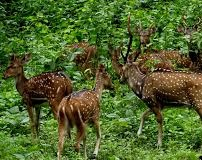

Welcom to fish web site.Everything you want to know about fish is in this web site
bass fish live in lakes
The scientific name of fish is pisces Kumily, once known as Kuzhumoor, used to be the capital of the Thekkumkoor Kings. In the 18th century, Marthanda Varma of Travancore defeated the Thekkumkoor Rajas. The Kingdom of Travancore comprised most of modern-day southern Kerala, the district of Kanyakumari , and the southernmost parts of the neighboring state of Tamil Nadu. After India's independence, Travancore merged with Cochin to form Travancore-Cochin which again, some time later, joined with Malabar district of Madras State to form Kerala.
Kumily is the largest Gram Panchayat in the Idukki district of Kerala. It is a town in Cardamom Hills near Thekkady and Periyar Tiger Reserve. Kumily is gateway town in Kerala to Tamil Nadu.